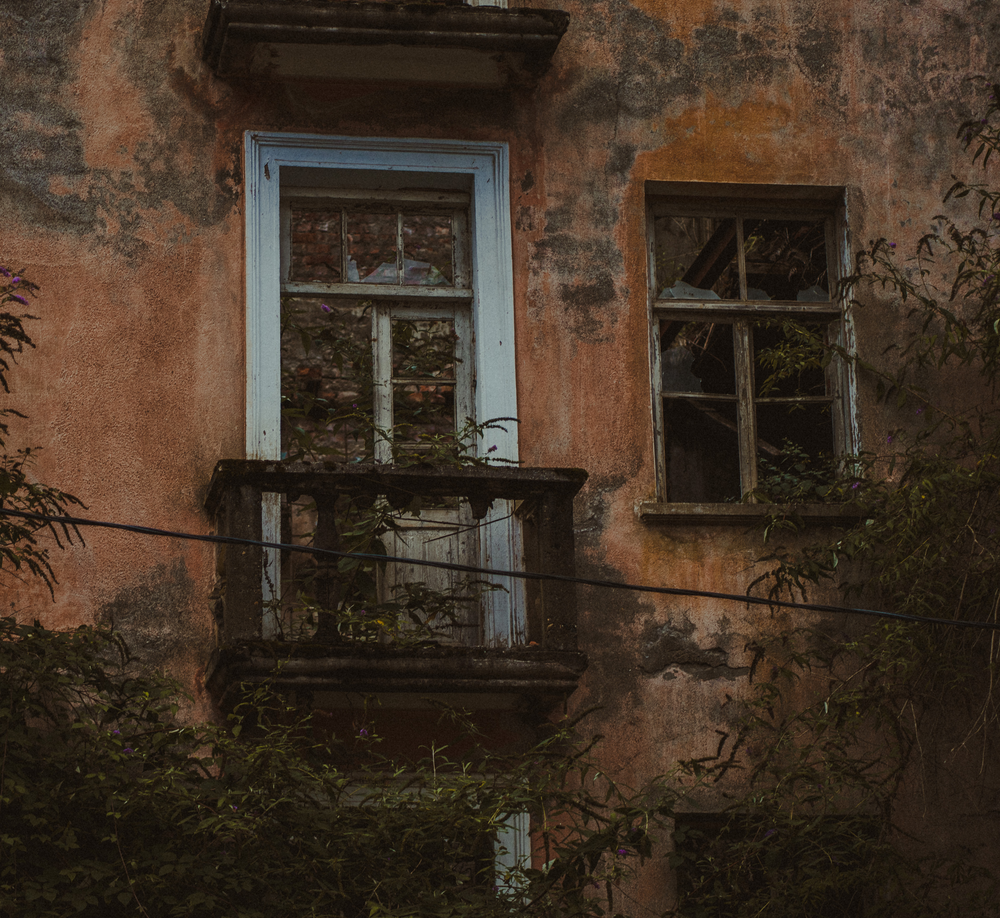
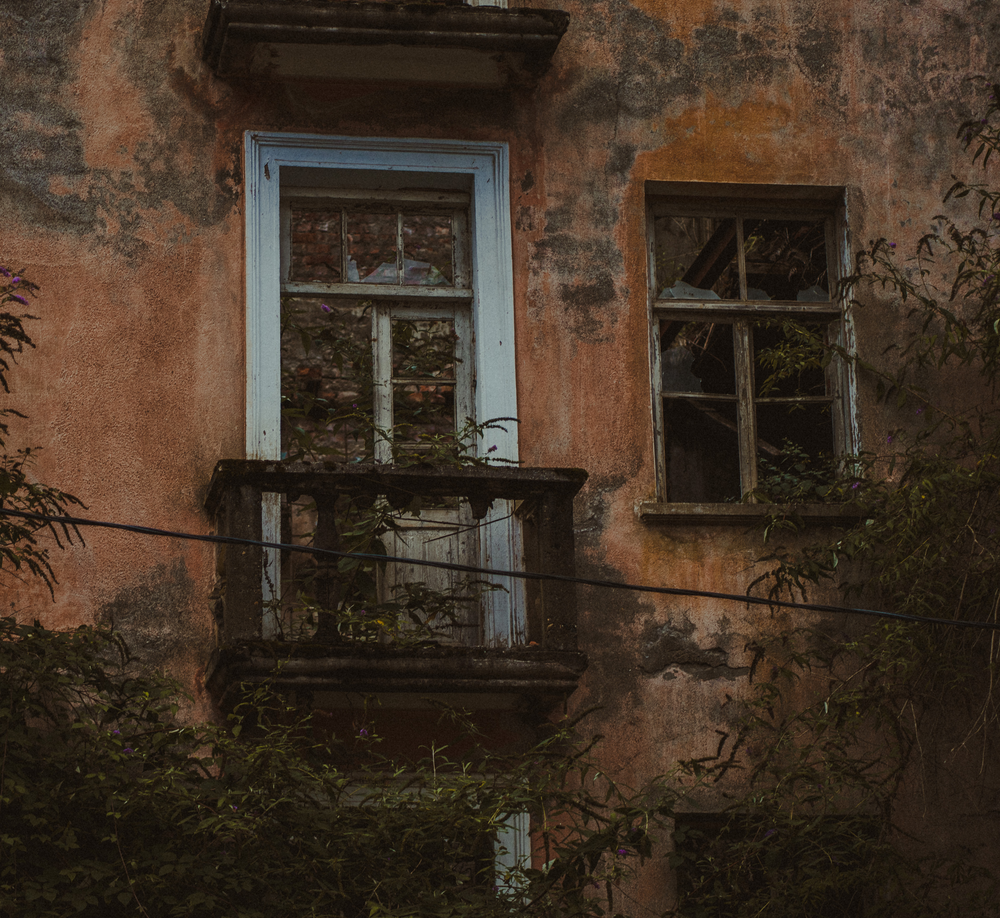

Ткварчал — город, которого нет
Давид Аршба, специально для newcaucasus.com
Ткварчал — умирающий город-призрак, который в полной тишине издает звуки последних вздохов. Природа постепенно берет свое. Последние следы войны покрывает буйная субтропическая зелень. И по законам природы все должно остаться в прошлом и из пепла зародиться новая жизнь…
Ткварчал был основан в 1942 году и впоследствии стал одним из крупнейших центров по добыче каменного угля на Кавказе. Многие здания в городе были построены пленными немецкими солдатами после Второй мировой войны.
После грузино-абхазской войны 1992-1993 гг. Ткварчал сильно пострадал от боевых действий и пришел в полный упадок. Население сократилось в несколько раз.
По данным за 2019 год здесь жили 5110 человек, в то время как в 1989 году население составляло около 22 тысяч.


 



С оригинальной версией статьи вы можете ознакомиться здесь https://newcaucasus.com/society/20742-molodezh-abhazii-problemy-i-problemy.html
Текст содержит топонимы и терминологию, используемые в самопровозглашенных республиках Абхазия и Южная Осетия